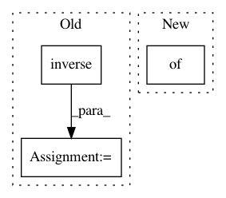

67472e8698ea7764012bf2d97519167878383b05,sac/policies/real_nvp.py,RealNVPPolicy,build,#RealNVPPolicy#,62
Before Change
tf.stop_gradient(self.distribution.bijector.forward(self.x)),
(None, 2),
name="y")
self.inverse_x = self.distribution.bijector.inverse(self.y)
if self.config["squash"]:
self._action = tf.tanh(self.y)
After Change
self.Q = self._qf(self._observations_ph, self._action)
self.log_pi = self.distribution.log_prob(
self.y, bijector_kwargs={"observations": observations})
self.pi = tf.exp(self.log_pi)
log_Z = 0.0
In pattern: SUPERPATTERN
Frequency: 4
Non-data size: 3
Instances
Project Name: rail-berkeley/softlearning
Commit Name: 67472e8698ea7764012bf2d97519167878383b05
Time: 2018-05-22
Author: kristian.hartikainen@gmail.com
File Name: sac/policies/real_nvp.py
Class Name: RealNVPPolicy
Method Name: build
Project Name: masa-su/pixyz
Commit Name: 57830b8c78a8f0997f9a7dc61d33a1bf1adb3ca5
Time: 2021-01-25
Author: kaneko@weblab.t.u-tokyo.ac.jp
File Name: pixyz/distributions/flow_distribution.py
Class Name: InverseTransformedDistribution
Method Name: sample
Project Name: masa-su/pixyz
Commit Name: 30028c6256de0cef715095e3994e396025c068d4
Time: 2020-05-04
Author: kaneko@weblab.t.u-tokyo.ac.jp
File Name: pixyz/distributions/flow_distribution.py
Class Name: InverseTransformedDistribution
Method Name: sample
Project Name: rail-berkeley/softlearning
Commit Name: 69fe8cbea88807869fce836cb30dc2a914f05b7e
Time: 2018-10-26
Author: hartikainen@berkeley.edu
File Name: softlearning/distributions/real_nvp_bijector.py
Class Name: ConditionalRealNVPFlow
Method Name: _inverse